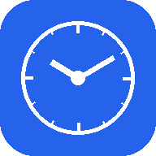

Chronos
A local-first infinite timeline and knowledge compiler for research, stories, projects, and history. The full Next.js app runs from the source repository and stores your work privately in browser storage.
This GitHub Pages site is the public project home. Run the app locally with bun install and bun dev.